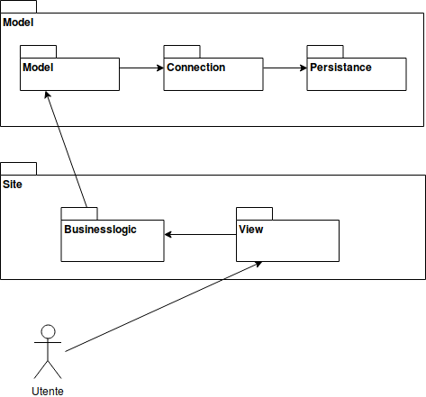

Introduzione
Documentazione relativa alla parte implementativa di Services Island.
Per questioni di tempo, abbiamo caricato questa parte online in quanto non siamo riusciti ancora ad avere un'implementazione concreta da testare Questa pagina è in continnuo aggiornamento.
Architettura

- Model: Maven Project che utilizza il pattern DAO e Jdbc (Parte Model dell’architettura MVC)
- Il sottopackage Model gestirà i dati in maniera astratta interfacciandosi con connection
- Il sottopackage Connection farà da “ponte” tra Model e Persistence
- Il sottopackage Persistance gestirà tutta la parte fisica riguardante la persistenza dei dati. Persistence effettivamente è quel sottopackage che si interfaccia con il Database
- Site: Tipica applicazione Java EE implementata su server Tomcat (Maven Archetype Site) (Parti View e Controller dell’architettura MVC)
- Il sottopackage Businesslogic controllerà le interazioni con il model e creerà un livello di astrazione sui dati. In generale in businesslogic ci saranno le Servlet e le classi di utilità (Parte Controller dell’architettura MVC)
- Il sottopackage View implementativamente non rappresenta un vero package, ma associamo nella nostra architettura view, alle pagine jsp contenute nella cartella "webapp" (Parte View dell’architettura MVC)
Javadoc
Generabile tramite il comando "mvn javadoc:javadoc"
Tecnologie Utilizzate
- Linguaggi di programmazione: Java 8, Javascript ES6, html 5, css 3 (gli ultimi due li consideriamo "linguaggi")
- Framework e tecnologie: JaveEE con Apache Tomcat, Bootstrap, JQuery, API pagamenti (ancora da scegliere), MySql, PostgreSql
- Build Tools: Apache Maven
- Tools Disegno: draw.io, websequencediagrams.com
- Ide: Eclipse, Visual Studio Code (per le pagine statiche)
- Issue Tracking: Atlassian Trello e strumenti di BitBucket (per ora abbandonati, in quanto migrati a GitHub), Google Drive
Repository
Il repository è diviso in 5 branch principali:
Tests
Tests effettuati con Junit, generabili tramite il comanto "mvn test"
Tests Model
Work in progress
Tests Site
Work in progress
Torna Sopra